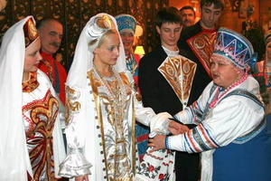
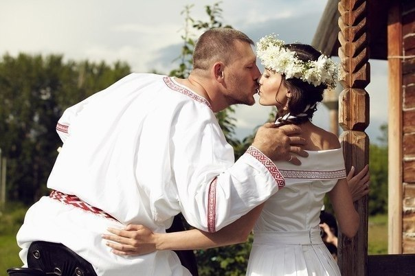

«На древний праздник Любомир, сотворите великий пир на весь мир, ибо кто Свадебных пиров не учиняет, тот честного достатка и благодати детей Родов своих лишает, и новые Семейные Союзы те, Общины и Светлые Боги не принимают».
Слово Мудрости волхва Велимудра
СОЗДАНИЕ СЕМЕЙНОГО СОЮЗА.

Если молодой человек не находил себе невесты в своем селении, тогдасваты ездили, искали для жениха невесту, по Городам и Весям. Они договаривались о смотринах, и родители жениха вместе с ним приходили в дом невесты. Слово «невеста» означает: «Девушка, невесть откуда взятая, т.е. сосватанная в другой Веси (области, крае). Девочка с малых лет наделена способностью вестовать, т. е. воспринимать Весть Богов покровительствующих данному Роду. Когда девушка взрослела, и ее начинали сватать, она переставала вестовать, т. е. доводить до сведения Родителей волю Богов своего Рода. Зная свое предназначение, она готовилась воплощать в мире Яви Богов из Рода своего будущего мужа, т. е. продлевать другой Славяно-Арийский Род.
Сваты договаривались о смотринах и родители жениха вместе с ним приходили в дом невесты. Во время трапезы невеста подавала на стол всевозможные яства и, то и дело, поглядывала на жениха, который рассматривал ее. Если молодые были по нраву друг другу, то сватовство читалось состоявшимся.
В горницу, к невесте посылали женщину и спрашивали: «По сердцу он тебе пришелся?» Если она говорила: «Да» — значит, смотрины состоялись. Если «Нет», то - нет. У жениха спрашивали то же самое. Если девушке понравился, а парню нет, значит, ему советовали лучше присмотреться. Могли быть дополнительные смотрины. Жених не просто смотрел на невесту: лицо, косу, тело и Душу. Он оценивал, достойна ли она, быть матерью его детей? Если оба нравились друг другу, то их нарекали женихом и невестой.
Гости дарили подарки родителям девушки и уходили.

С обоюдного согласия молодые нарекались женихом и невестой, и завершалось помолвкой. Срок Свадьбы Родители согласовывали с волхвами, жрецами, но данный срок был не менее двух славянских месяцев (40+41=81 день). В этот период жених с невестой окончательно определялись в своем выборе, изучая душевные качества друг друга. Также на сватовстве смотрелись Родовые древа, чтобы исключить возможное родство до пятого колена.
Перед обрядом Освящения Семейного Союза, все мужчины двух Родов собирались и напротив терема отца жениха ставили еще один терем со всеми хозяйскими постройками, чтобы молодые супруги с самого начала своей совместной жизни имели свое жилье и хозяйство. Жилье отца и сына стояли - лицом к лицу. Поэтому и появилось всем известное понятие - улица («вулица). У лица отца. Со временем «В» отпала, но в украинском языке звучание это осталось. Строили так, чтобы молодые жили на глазах у родителей, согласуя свою жизнь, с жизнью старших родичей.
Свадьбо (Руна «Сва» — означает Небеса, отсюда — Свадьба, точнее: СВА ДЕ БО — СВА (небесное) ДЕ (деяние) БО (Богов)).
Свадебный «день», а не «ночь». У наших Предков все происходило днем. На Свадьбе, после встречи и угощения гостей, молодые удалялись в свою опочивальню, где матерями молодых супругов было приготовлено ложе. Свадебный пир продолжался и никто не тревожил молодых. Молодожены в этот светлый день зачинали своего первенца. При первой близости супруг наделял супругу пятью дарами: Образом Духа и Крови своего Рода, Энергией одного года своей жизни, Даром Материнства, Женской Долей, своей Любовью и покровительством своего Рода. Супруг раскрывал в своей супруге Родовую Память. После раскрытия Родовой памяти в молодой супруге просыпается мудрость ее матери, бабушки, прабабушки и т.д. Вверх по Родовому Древу, вплоть до Вышней Богини - Покровительнице Рода.
Сколько же иметь детей? Сколько иметь детей в своей семье супруги решали сами, никто не оказывал на них давления. Но молодые супруги хотели исполнить долг перед Родом, а для этого необходимо родить и воспитать 9 детей. С каждым рожденным ребенком, у отца открывались духовные каналы связи с Силой Рода. И отец восстанавливал сою Жизненную силу, отданную для рождения ребенка. А мать с рождением каждого ребенка молодела на 3 года. Поэтому каждый мечтал иметь Потомственный Круг, то есть 16 детей.
Использование литературы: Славяно-Арийские Веды Книга II, Омск 2005 год; журналы: Ведическая культура: № 1 с.16-19, № 2 с.11-14, №3 с. 12-14, №5 с. 17-19, № 7 с.13 Краснодар 2005 год). Фотографии из ресурсов интернета.